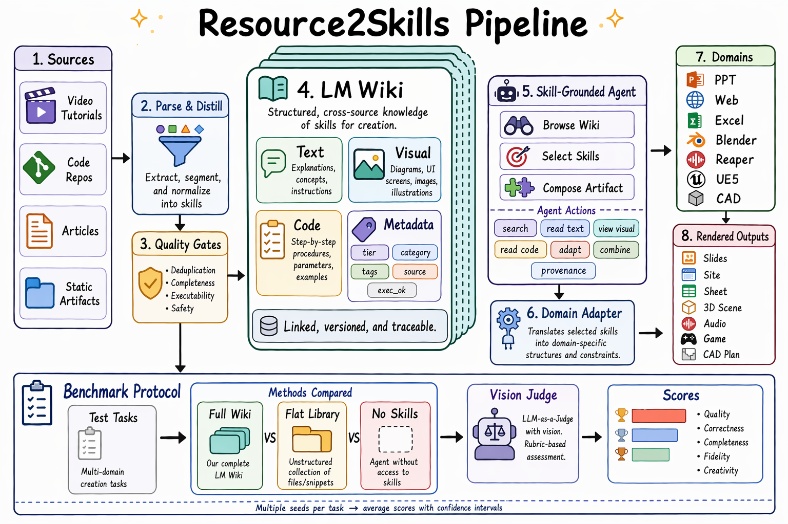

Released Domains
5
Web, PPT, Excel, Blender, and REAPER-style audio.
Technical details & paper
arXiv preprint
Resource2Skill converts tutorial videos, manuals, articles, repositories, and reference artifacts into reusable skill entries that agents can browse, select, compose, and execute through domain MCP backends.
Released Domains
5
Web, PPT, Excel, Blender, and REAPER-style audio.
Evaluated Domains
7
Paper abstraction also includes CAD and UE5.
Average Lift
+11.9
Overall point gain from skill access across model-domain cells.
00
Software agents can operate real tools, but domain-specific tasks still require procedural knowledge, tool-use conventions, and recovery strategies. Resource2Skill turns noisy human-created resources into a hierarchical multimodal Skill Wiki of reusable executable skills. At task time, an agent decomposes a request, retrieves and reads relevant wiki evidence, composes selected skills, and executes through MCP-mediated domain tools. Experiments across real software domains show that skill-centric execution improves artifact quality over no-skill agents, flat skill libraries, retrieval-only selectors, and harness baselines.
01
Agents succeed less on isolated facts than on reusable procedural know-how: how to decompose a goal, which API pattern to use, what intermediate state to inspect, and how to recover when a step fails. We call this a skill. Existing skill libraries are hand-written, text-centric, or mined from agent traces, which leaves the richest human source, tutorial videos and other multimodal resources, largely unused. Resource2Skill distills those resources into executable skills and organizes them as a hierarchical, multimodal Skill Wiki.
Skills convert observations of how tasks are solved into compact instructions, code fragments, and visual references that future agents can repeatedly invoke.
Videos capture temporal operations and before/after visual effects; code captures executable tool patterns; articles and artifacts supply conceptual and stylistic grounding.
Each skill bundles structured text, executable code, visual examples, metadata, and provenance, organized by domain so agents browse and inspect it like a library.
The same resource-to-skill operator builds the offline library and acquires new skills online when a request exposes a gap.
02
Resource2Skill runs as four stages over a shared, MCP-mediated browse-select-execute interface. The same construction operator is reused at test time, so online acquisition adds no separate pipeline. Every stage shares one interface over domain-specific backends.

A vision-capable operator distills tutorial videos, repositories, articles, and reference artifacts into candidate skills. An acceptance predicate enforces completeness, provenance, deduplication, modality consistency, and code executability.
Each accepted skill is a tuple of taxonomy path, text, visual, code, and metadata. A domain-specific tree shares one browse-and-read interface.
BM25 scores each entry's name, tags, applicability, and taxonomy path to shortlist candidates; a language model then reads their evidence and composes a small subset.
Agent and domain share one MCP tool surface; selected skill code runs directly against the live server. When no candidate fits, the same operator distills new skills online.
03
Matched-brief comparison on N=80 tasks per domain across four GPT-5 backbones. The only toggle is whether the agent can browse and compose the Skill Wiki or must solve free-form through the domain apply tool; the judge, brief set, and decoding seed are held fixed within each cell. Scores are rubric-weighted overall, in percent.
| Backbone | System | Web | Excel | Reaper | PPT | Blender | CAD | UE5 | Avg. |
|---|---|---|---|---|---|---|---|---|---|
| GPT-5.5 | w/ Skills | 82.8 | 61.3 | 77.6 | 67.5 | 53.1 | 48.7 | 69.5 | 65.8 |
| w/o Skills | 69.4 | 58.2 | 73.1 | 53.9 | 35.6 | 42.6 | 30.2 | 51.9 | |
| Delta | +13.4 | +3.1 | +4.5 | +13.6 | +17.5 | +6.1 | +39.3 | +13.9 | |
| GPT-5.4 | w/ Skills | 82.4 | 76.4 | 77.3 | 64.8 | 44.1 | 55.7 | 67.3 | 66.9 |
| w/o Skills | 68.7 | 58.6 | 73.2 | 55.4 | 29.5 | 48.7 | 29.1 | 51.9 | |
| Delta | +13.7 | +17.8 | +4.1 | +9.4 | +14.6 | +7.0 | +38.2 | +15.0 | |
| GPT-5.4 Mini | w/ Skills | 67.6 | 45.7 | 62.6 | 52.4 | 28.8 | 50.3 | 55.9 | 51.9 |
| w/o Skills | 55.2 | 42.4 | 58.3 | 45.9 | 18.7 | 45.6 | 23.7 | 41.4 | |
| Delta | +12.4 | +3.3 | +4.3 | +6.5 | +10.1 | +4.7 | +32.2 | +10.5 | |
| GPT-5.4 Nano | w/ Skills | 49.5 | 34.6 | 50.5 | 41.3 | 15.8 | 51.4 | 56.3 | 42.8 |
| w/o Skills | 42.3 | 31.8 | 48.7 | 38.6 | 12.2 | 45.1 | 24.5 | 34.7 | |
| Delta | +7.2 | +2.8 | +1.8 | +2.7 | +3.6 | +6.3 | +31.8 | +8.1 |
Overall score (%), unweighted mean over the seven domain columns. Each cell is paired by brief ID, so the delta rows are matched within-cell differences. CAD and UE5 are paper-only domains and are not part of the public code release.